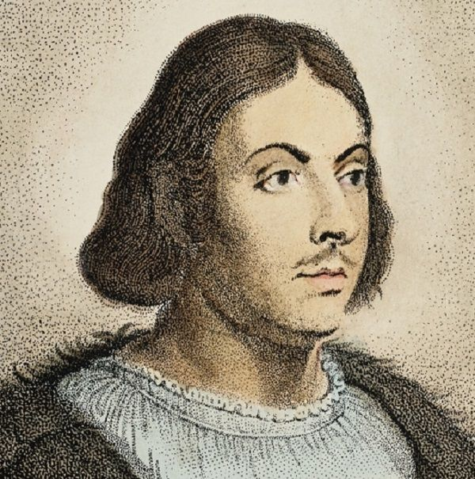

Джованни Боккаччо
Итальянский писатель и поэт, автор «Декамерона».

Джованни Боккаччо (1313 – 1375) — итальянский писатель и поэт, один из ключевых представителей раннего Ренессанса. Его главное произведение, «Декамерон», представляет собой сборник ста новелл, рассказанных группой молодых людей, укрывшихся от чумы. Книга отражает гуманистические идеалы и интерес к человеческой природе.
Боккаччо также известен своими поэтическими произведениями, такими как «Фьямметта» и «Тезеида», которые оказали влияние на развитие европейской литературы.